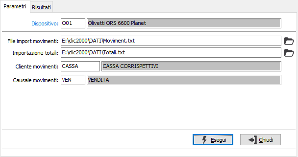
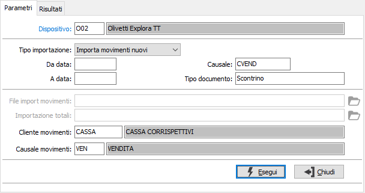
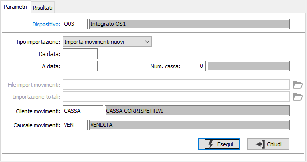
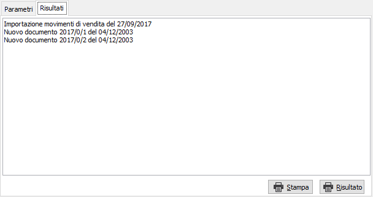

Ricezione movimenti
La procedura consente di ricevere dal dispositivo remoto selezionato le vendite effettuate che saranno riportati nei movimenti di vendita.
La pagina dei parametri assume caratteristiche diverse in relazione al dispositivo selezionato.
Dispositivi con collegamento indiretto

FILE IMPORT MOVIMENTI: proposto in automatico in base al dispositivo; indica il file, completo di percorso, che contiene i movimenti esportati dalla procedura CLIC2000.
IMPORTAZIONE TOTALI: proposto in automatico in base al dispositivo; indica il file, completo di percorso, che contiene i totali dei movimenti esportati dalla procedura CLIC2000.
CLIENTE MOVIMENTI: proposto in automatico in base al dispositivo; codice del cliente da utilizzare per la generazione dei movimenti. Sul campo sono presenti le funzioni di ricerca (F9).
CAUSALE MOVIMENTI: proposto in automatico in base al dispositivo; indica il codice della causale di vendita da utilizzare per la generazione dei movimenti. Sul campo sono presenti le funzioni di ricerca (F9).
Dispositivi con collegamento diretto:

TIPO IMPORTAZIONE: definisce se importare i soli movimenti nuovi, quelli già importati o tutti i movimenti indistintamente.
DA DATA: data del movimento da cui iniziare l'importazione.
A DATA: data del movimento con cui terminare l'importazione.
CAUSALE: causale riservata ad Explora da non modificare se non suggerito dal servizio assistenza software.
TIPO DOCUMENTO: tipo documento riservato ad Explora da non modificare se non suggerito dal servizio assistenza software.
CLIENTE MOVIMENTI: proposto in automatico in base al dispositivo; codice del cliente da utilizzare per la generazione dei movimenti. Sul campo sono presenti le funzioni di ricerca (F9).
CAUSALE MOVIMENTI: proposto in automatico in base al dispositivo; indica il codice della causale di vendita da utilizzare per la generazione dei movimenti. Sul campo sono presenti le funzioni di ricerca (F9).
Dispositivi con collegamento integrato:

TIPO IMPORTAZIONE: definisce se importare i soli movimenti nuovi, quelli già importati o tutti i movimenti indistintamente.
DA DATA: data del movimento da cui iniziare l'importazione.
A DATA: data del movimento con cui terminare l'importazione.
NUMERO CASSA: inserire l'eventuale numero di cassa per cui effettuare la ricezione dei movimenti; sul campo sono disponibili le funzioni di ricerca F9 sulla tabella stessa.
CLIENTE MOVIMENTI: proposto in automatico in base al dispositivo; codice del cliente da utilizzare per la generazione dei movimenti. Sul campo sono presenti le funzioni di ricerca (F9).
CAUSALE MOVIMENTI: proposto in automatico in base al dispositivo; indica il codice della causale di vendita da utilizzare per la generazione dei movimenti. Sul campo sono presenti le funzioni di ricerca (F9).
La pressione del pulsante Esegui dà il via all'importazione e riporta il risultato nella pagina Risultati. Da questa pagina è possibile utilizzando i pulsanti Stampa e Risultato stampare i movimenti generati e/o quanto riportato nella casella di testo.
